12/16/2014
Objectives
Content: students will define the powers and significance of each of
the twelve Olympians
Language: students will list the twelve Olympians and understand the
powers, domain, personality, and influence of each deity
The twelve Olympians
Major gods that Greeks believed lived in a kingdom called Mount Olympus |
Zeus: God of lightning, king of Olympus |
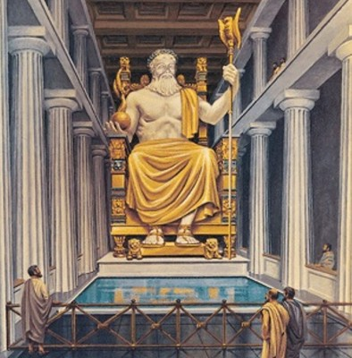 |
|
Zeus was the father of all gods |
Hades: God of the underworld |
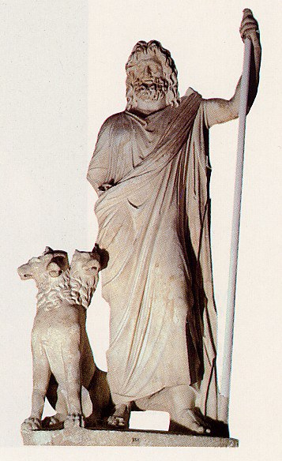 |
|
Brother of Zeus and Poseidon, but an outcast among the Olympians |
Poseidon: the God of the sea |
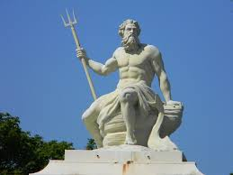 |
Brother to Zeus and Hades
His realm was the world's oceans and other sources of water |
Hera: goddess of marriage, women, queen of the gods |
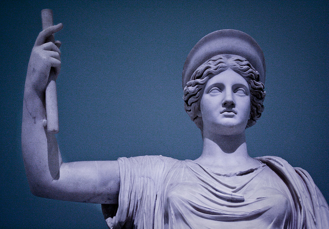 |
|
Hera was the wife of Zeus and the goddess of marriage and women
She resented Zeus' many affairs, but stayed with him because of her
domain (marriage)
She went out of her way to punish and challenge the demigods (because
many of them were children of Zeus... Living embodiments of his
infidelity)
However, Hera was also a wise and patient God to many, and widely
worshipped for her steadfast nature |
Aphrodite: goddess of love and beauty |
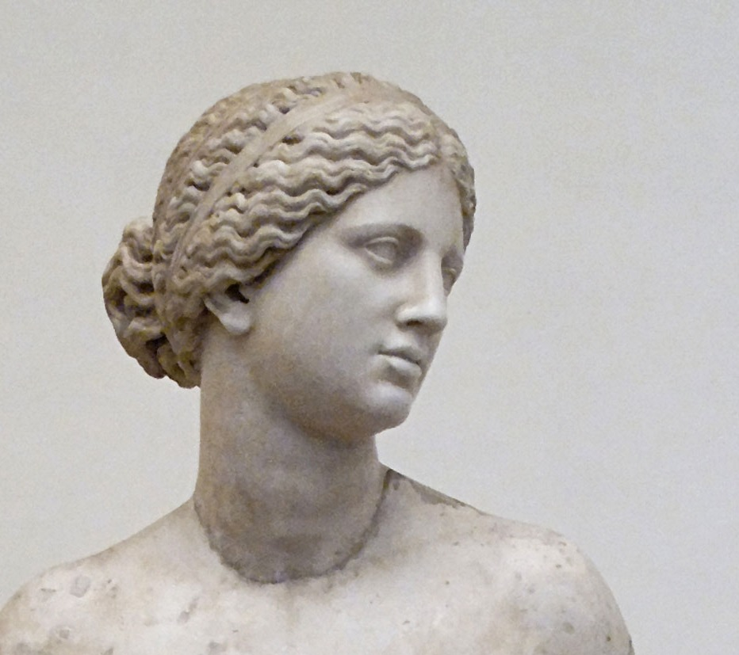 |
|
Born of sea foam, she is a daughter of Zeus
She was married off to Hephaestus, a deformed metal-smith God, to keep
the peace in Olympus
Most gods feared her ability to cause affairs and jealousy could lead
to infighting and war... A lesson about love, lust, and beauty for the
mortal world
Despite her marriage, she had a prominent affair with Ares, the God of war |
Ares: God of war |
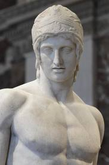 |
|
Ares was the son of Zeus and Hera; he represented physical violence
and brutality of war (like a soldier)
His sister, Athena, represented military strategy and intelligence
(like a general)
Viewed as an angry God who required specific worship in battle... Only
conflict would sate his bloodlust |
Athena: goddess of wisdom and strategy |
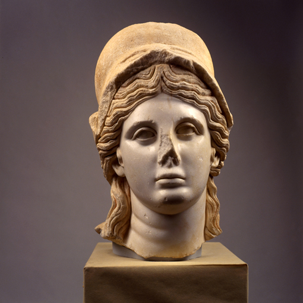 |
|
Athena was born, like an idea, from Zeus' head
She and Hera do not get along, because she is not Hera's child
She guides the philosophers, generals, and other strategists
One of the most popular and widely-worshipped deities
The Parthenon, along with all of Athens, was built in her honor |
Artemis: goddess of the hunt, wilderness, and virginity |
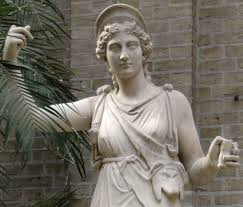 |
|
She is a widely respected and venerated God
Daughter of Demeter and Zeus, twin sister of Apollo
She was a huntress and spent her time away from Olympus with her
maidens, in the wild, on the prowl, hunting
She was depicted with animals, especially fawns, and typically had a
bow and arrow on her person |
Apollo: God of the sun, healing, poetry, music, archery, and more |
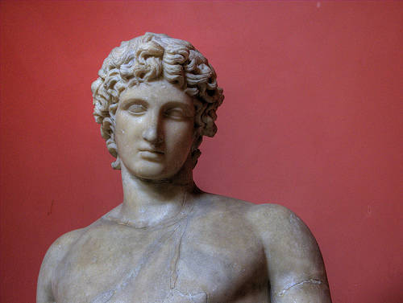 |
|
Depicted idyllically, even for a God Young, beardless, fit, etc... Son of Zeus, brother of Artemis Patron of Delphi, a major Greek city-state |
Hephaestus: God of craftsmen, metalwork, fire, and volcanoes |
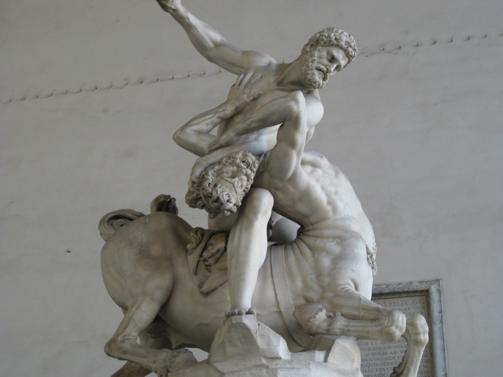 |
|
A crippled God because his father, Zeus, threw him down Olympus as a child He remained an important Olympian; he made all the gods' weapons... including Zeus' master bolt He was thoroughly worshipped and respected by the Greeks, especially his fellow metalworkers and industrialists in Athens |
Hermes: messenger of the gods, Zeus' attendant, patron of doctors and healers, patron of thieves and tricksters |
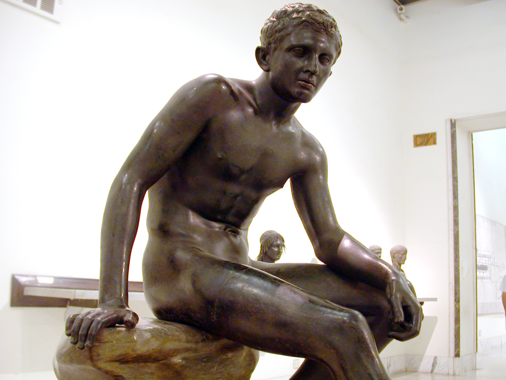 |
|
Hermes is a young God, but an important one with many duties He was able to deftly go between the mortal and immortal realms; he was characterized as a quick, nimble, and cunning God He was a messenger, and he ushered souls to the afterlife His symbol is the caduceus |
Other Major deities
Hestia: |
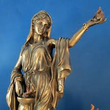 |
|
goddess of the hearth, architecture, domestic life |
Demeter: goddess of the fertility, harvest... |
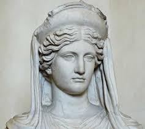 |
|
A part of all that is reaped is offered to her as a way of receiving continued success in farming and food |
Dionysus: God of wine, mirth, joy, excess, and well.. |
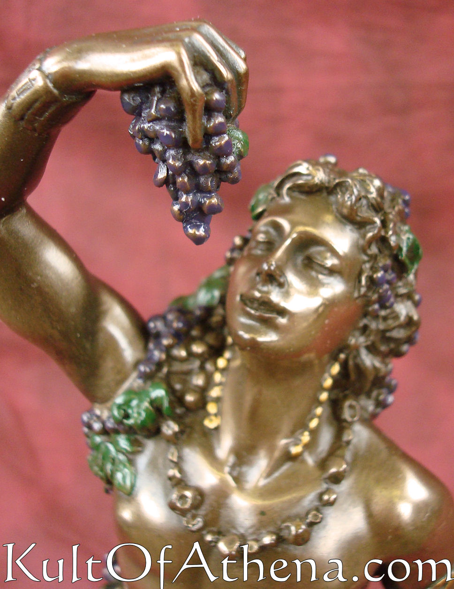 |
PARTYING |
In 507 BC, cleisthenes introduces political reforms called demokratia "Power to the people"
One of the most important contributions to governing in human history Democracy
Historian from Greece, Herodotus, wrote:
"In a democracy, there is, first, that most splendid of virtues, equality before the law."
Not everyone could partake in the governing decisions, debates, and voting
IN: property-owning, naturally born, Greek men older than 18
OUT: women, slaves, immigrants, and foreigners
Between 30,000 and 40,000 citizens were eligible out of a population near 250,000
Any member of the demos--any one of those 40,000 adult male
citizens--was welcome to attend the meetings of the Ekklesia
Which were held 40 time per year in a hillside auditorium, amphitheater, or other public venue that could hold their numbers and loaned itself to oration
at the end of the 4th bullet, some of the notes were missed!!!
More than 500 jurors were chosen by lot from a pool of male citizens older than 30 daily
Any member of the demos--any one of those 40,000 adult male citizens--was welcome to attend the meetings of the Ekklesia
Council designed to represent the specific tribes of city-states (local leaders, such as state senators and state representatives) Performed most hands-on tasks of governing
More than 500 jurors were chosen by lot from a pool of male citizens older than 30 daily
Aristotle believed this was the strongest, most democratic component of the Greek system because the juries were so powerful and effective Heard cases and sentenced by (majority vote)
A city-state is an independent or autonomous entity, whose territory consists of a city and possibly its surrounding territory The division was implemented in Greece mostly due to its geography The people were isolated by mountains and other landforms and geographic obstacles
One of the most powerful city states in all of Greece and a leading city in the world
CONTENT: students will identify and list the critical aspects of the
Greco-Persian War and its significance to relations between Greek
city-states
LANGUAGE: Students will connect the differences between Athens and
Sparta, in terms of their relevance to the events of the Peloponnesian
War
Insurmountable: too much or too great to be overcome, defeated,
handled, or dealt with.
Invincible, unconquerable, unassailable
Innumerable: such a great number of something cannot be counted (often
used in hyperbole)
Legion, countless, untold
Though this effort was unsuccessful, it was a moral victory and inspired Greek forces to hold the Persians off until he eventually lost so many men he gave up and ended his quest to take over Greece The peace that's followed after the Persian defeat wouldn't last...
THE ATHENIANS LED THE DELIAN LEAGUE VS THE SPARTANS AND THE PELOPONNESIAN LEAGUE
Athens used its naval superiority along the Peloponnesian coast to quell uprising to its empire and attempt to take over more territory in Greece
Peace of Nicias (421 BC) would settle the fighting... at first This invasion by the Athenians had heated the intensity of the rivalry between Athens and the more minor city-states... But now they could not go back
Athens sent a huge force through Syracuse to attack Sicily, but failed disastrously
Athens is HUGELY weakened... They lost most of their powerful navy and nearly every number of their ground forces between the Persian and Peloponnesian Wars
Other city-states, ESPECIALLY SPARTA, could not trust the Athenians...
Greece would be unable to fight together to fend off future invaders
students will define the ancient Olympics in terms of their importance and list the events that comprised it.
the leading international sporting event featuring summer and winter sports competitions in which thousands of athletes participate in a variety of competitions
a series of athletic competitions among representatives of city-states of Ancient Greece Origins of the Olympics (776 BC)
(thank goodness)
The religious element never faded; 100 oxen were sacrificed to Zeus at the midpoint of every games
Olympia became a Mecca (important and famous destination, often for religious reasons) of worship
Massive statue of Zeus was erected
Zeus is pictured seated on a throne, his eagle staff in one hand and the Greek goddess of victory, Nike, in the other
It was 42 feet tall and made of ivory and gold
It became one of the seven wonders of the ancient world
students will connect mythology to the historical founding of the Roman Empire
Students will analyze the details of the story of Romulus and Remus
Legend: a story about a person who did something heroic, not based on fact and cannot be proven as true, but usually teaches a lesson about life or a specific event
The legend of Romulus and Remus is about the actual founding of Rome
Romulus and Remus is about the actual founding of Rome
Romulus and Remus' story features gods and other elements of mythology
Romulus and Remus were twin brothers, sons of a princess, Rhea Silvia, and Mars, the God of war
Rhea's father, the king numitor had a son, Amulius, who did not want to compete with the boys for the throne
Amulius, their uncle, seized the boys, put them in the basket, and threw them into the Tiber River, hoping they would drown...
However, they were rescued by a She-Wolf, who cared for them
The boys were then raised by wolves... Until one day they were found by a shepherd, Faustulus
Once they grew into men, the boys decided to take revenge on Amulius for what he had tried to do to them, and for the throne he denied them... They decided to kill Amulius
They wanted to build a new city to reign over, and then use to challenge Amulius, who had taken the throne after all, but they couldn't agree where to build
Romulus and Remus decide to build separate cities and a rivalry grows between them
One day, Remus mocks Romulus by jumping over his city wall, stating its too easy to breach "Rome" ... Romulus kills him in retaliation, swearing no man will ever mock his kingdom... The kingdom of ROME...
Romulus fills Rome's population with criminals and runaway slaves... He steals women from a neighboring kingdom, Sabine, to populate the city
Sabine declares war on Rome for the theft, but eventually Romulus makes peace and Sabine is incorporated into Rome. Romulus becomes the king of Rome in 753 BC
Students will chronicle the various ages of Roman rule: Kingdom to republic to empire
Language: Students will analyze the legacies of each era. Students will list significant details of each era.
'Village' of Rome formed and founded when tribes banded together in the 750's BC along the Tiber River
Etruscans: Latin and Sabine tribes combine and form a quasi-republican government
"Quasi" means sort-of
The republic restrains the power of the king from becoming a tyrant
Kings were elected by the populous (the people) and the king does not rely on military force to reign over the people
Monarchy ends in 509 BC with the fall of 7th king, Lucius Tarquinius Superbus
SPQR senatvs PopvlvsQve Romanvs
Which means "the senate and the people of Rome)
Guidelines and principles handed down through the generations that tell how the government (a senate) should be run
Rome had two social classes: Plebians (poor and middle class) and patricians (elite)
Patricians made up the senate (Aristocracy)
Senate meetings take place in the forum
An open area that could function as a market or served as a location for public meetings
This is where the senate works as a committee to make governing decisions, including appointing the position of consul